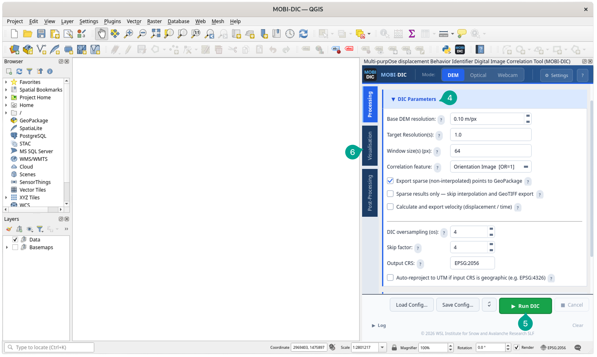

First Run¶
Using the QGIS Plugin¶
This guide walks you through your first DIC run — from opening the plugin to loading displacement results in QGIS. Processing time depends on data size, resolution, and window settings.
Before starting, here is a quick overview of the main dialog components:
- Plugin icon: Click the MOBI-DIC button in the QGIS toolbar to open the dialog.
- Mode toggle: Switch between DEM, Optical, and Webcam processing modes.
- Menu sidebar: Navigate between the three workflow stages: Processing, Visualisation, and Post-Processing.
- Configuration panel: The main working area; expands into collapsible sections (Input/Output, DIC Parameters, Co-Registration, Vector Filter) depending on the active sidebar tab.
- Run & Processing Log panel: Launch a run with ▶ Run DIC, load/save configurations, and monitor live log output. Access Settings and Help from the top-right buttons.
{kind=link}
Input data requirements
- DEM mode: Single-band GeoTIFFs, same CRS, spatially overlapping.
- Optical mode: Single- or multi-band GeoTIFFs (converted to grayscale), same CRS, spatially overlapping.
- Webcam mode: Any image format (JPEG, PNG, TIFF, …); no CRS needed; different sizes handled via
align_mode.
See Input data requirements for full details.
First run¶
- Click the MOBI-DIC toolbar button to open the dialog.
- In the Input/Output tab, set the Primary input (pre-event DEM or image) and Secondary input (post-event). See Input/Output tab for time-series mode and all input options.
-
Choose an Output directory and optionally edit the Run tag.
-
In the DIC Parameters tab, review the resolution and window size settings. The plugin auto-detects the native resolution from the primary input. See DIC Parameters for co-registration and advanced options.
- Click ▶ Run DIC to start processing. Output appears in the log panel. The first run may take a little longer due to one-time initialisation.
-
Once complete, switch to the Visualisation tab in the sidebar and open the Results Import sub-tab.

-
Set the output directory and click Scan for Results to detect all displacement GeoTIFFs.
- Optionally filter by component, then click Load Selected into QGIS to add the layers with automatic symbology applied. See Results Import for symbology options and Google Earth export.
{kind=link}
{kind=link}
Using the CLI¶
The CLI runs the same processing pipeline as the plugin, driven entirely by a YAML configuration file. It is suited for headless servers, automated workflows, or batch jobs sweeping multiple resolution and window size combinations.
The easiest way to get started is the 📋 Copy Run Command button at the bottom of the plugin dialog — it writes the current settings to output_dir/last_run_config.yml and copies the full shell command to the clipboard, ready to paste into a terminal or script.
To run manually, use the Python interpreter and scripts bundled with the plugin:
Replace run_dic4dem_processing.py with run_dic4optical_processing.py or run_dic4webcam_processing.py for other modes.
See CLI & Batch Processing for a full walkthrough of batch runs and pipeline-only installations, and Configuration Reference for all available parameters.
Expected outputs¶
Each run produces a directory under output_dir/ named after the run tag, containing:
*is a shorthand for{run_tag}_{date1}_{date2}throughout the table below.
| File | Description |
|---|---|
DIC_*.h5 |
Raw HDF5 results (sparse correlation grid) |
DIC_x_*.tif |
East–West (x) displacement (interpolated GeoTIFF) |
DIC_y_*.tif |
North–South (y) displacement |
DIC_xy_*.tif |
2D horizontal displacement magnitude |
DIC_dz_*.tif |
Vertical displacement, raw (DEM mode only) |
DIC_z_*.tif |
Vertical displacement, co-registration restored (DEM mode only) |
DIC_xyz_*.tif |
3D displacement magnitude (DEM mode only) |
DIC_az_*.tif |
Displacement azimuth (degrees from North) |
DIC_dip_*.tif |
Displacement dip angle (DEM mode only) |
DIC_ee_*.tif |
Correlation error (normalised RMS DFT error) |
DIC_sparse_*.gpkg |
Sparse displacement points (optional) |
DIC_coherence_filter_*.gpkg |
Coherence-filtered displacement vectors (optional) |
DIC_*_filtered.png |
Vector field plot (optional) |
*_log.txt |
Full processing log |
For the physical meaning of each displacement component and how to interpret the EE quality layer, see Output components.
If something goes wrong, see the Troubleshooting guide.